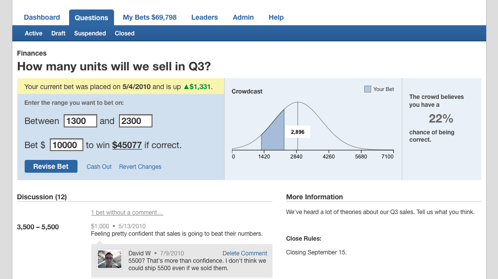

Ning
http://ning.com 2006–2009I was a designer and client-side developer for Ning’s primary product, “Your Own Social Network,” for 3 years, beginning with its inception in 2006. By the time I left in 2009, the product had 36 million users and 1.6 million social networks. Our small design team, consisting of just myself and another designer for the first 2 years, created most of the interaction and graphic design, as well as production HTML and CSS code.
The “Create Your Own Network” Flow

The interaction and graphic design of the “Create Your Own Network” pages was my first big project at Ning. Our goal was to make the process feel fast and easy for non-technical users, while giving the user an understanding of the features and a feeling of ownership.
I created wireframes and led usability studies to design a flow that was instrumental to the success of the product.
Sign Up Flows

Throughout 2007, Ning was rapidly adding features to fuel a growing number of users. However, I argued that we could get even more growth by redesigning our Sign-In, Sign-Up, and Invitation flows and pages. We released my redesign in the last weeks of 2007 and saw a dramatic surge that initiated the immense growth Ning saw in 2008.
I updated the layout, typography, flow, wording, and HTML & CSS of the pages with an eye towards lowering every hurdle. I also set up and ran several rounds of usability testing to find issues and ensure we were improving.
Social Networking Features

In addition to the core product, I worked closely on most of the individual features of the networks, including photos, videos, messages, forums, groups, network administration pages, and an activity stream. I also worked on the initial product design that allowed for features to be added in a modular fashion.
Network Themes

Each network created on Ning has its own theme, consisting of colors, fonts and background images. I worked on the theme-creation page and creating an underlying product design that made sense regardless of the theme applied to it. I also created an HTML and CSS framework to support theming across many features, including new and updated future features.
Crowdcast
http://crowdcast.com 2010In 2010, I was the lead interaction and graphic designer for Crowdcast’s enterprise prediction market. I led a redesign of the product to make it easier for users and administrators to use and understand. The product was used by Electronic Arts, Hallmark, and several other major product and retail companies to gather and interpret information from their employees.
Updated Design
I updated the interaction and graphic design to help users understand how to use the product, which led to more and better usage. I also designed a commenting system to encourage users to discuss the numbers and dates they’d entered into the product.
New Executive Dashboard
I created a set of new information dashboards to help administrators better interpret the information that the system was providing them. Administrators could see a single page comparing all their metrics against targets, with an additional page of detailed information for each metric.
Product Experimentation

To more quickly achieve product-market fit, I took several approaches to product experimentation, including rapidly user testing concepts using paper prototyping and mechanical turking.
LoudSauce
http://loudsauce.com 2011In the first half of 2011, I worked on the interaction and graphic design of LoudSauce’s crowd-funded advertising platform. I collaborated with 2 Rails developers to design and build a functioning site, starting from an existing static website prototype.
Interaction Design
I worked closely with the company founder and the tech team to rapidly wireframe and design a minimally viable product within a tight budget.
Graphic Design

Starting from the existing design, I did a design realignment to better support the goals and technical needs of the product.